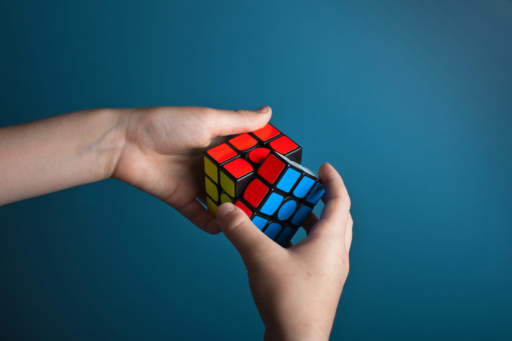
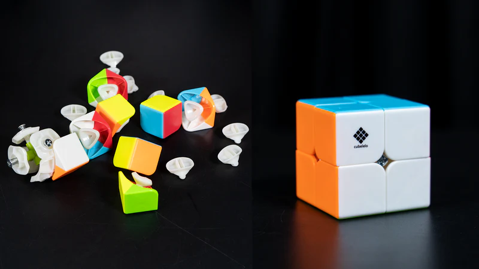
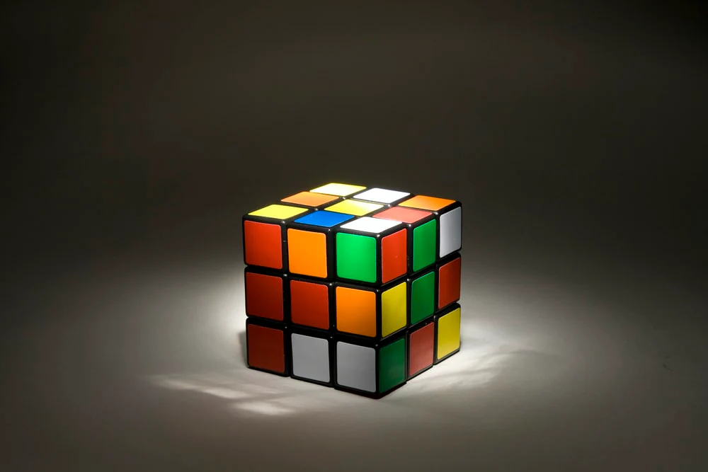

How Many Ways Can You Scramble a Rubik's Cube?
The math behind rubik’s cube scrambles
The Rubik’s Cube is one of the most popular puzzles in the world. People’s experiences with this toy range from solving it in under three seconds to scrambling it and leaving it on a shelf because it's too difficult. Whether or not you can solve it, there's a lot of fascinating math behind this puzzle.
I've been solving Rubik’s Cubes since I was ten years old and sometimes I would sit in one spot and solve the cube hundreds of times. This got to the point where I was at one point worried that I would run through all the possibilities.
This brings up an interesting question: How many possible scrambles are there?

Starting with the 2x2 Rubik’s Cube
To break this problem down, let's start with a simpler example: the 2x2 Rubik’s Cube. To calculate the total number of possible scrambles, we first need to understand how the pieces can be arranged.
A 2x2 Rubik’s Cube consists of eight corner pieces, but most models have one fixed piece attached to the core. This means that only seven corners can be moved freely. When placing these seven corners, the first piece has seven available slots, the second has six, the third has five, and so on. This follows the factorial pattern, giving us:
7! = 7 × 6 × 5 × 4 × 3 × 2 × 1 = 5,040
However, placing the pieces isn’t enough—we also need to consider orientation. Each of the seven movable corner pieces can be twisted into three different orientations. This gives us:
37 = 2,187
Multiplying these together, we get the total number of ways to arrange and orient the cube:
5,040 × 2,187 = 11,022,480
Accounting for Cube Limitations
At first glance, 11,022,480 seems like the total number
of scrambles. However, not all of these configurations are possible
if we start from a solved cube and make legal moves.
If you've ever solved a Rubik’s Cube,
you may know how frustrating it is when a single corner
piece twists out of place. That’s because a valid scramble cannot
have just one incorrectly rotated corner—twisting one corner requires
another to twist as well. Because of this restriction, the last corner's
orientation is determined by the previous seven, meaning it has only one valid state.
This reduces the number of orientations from 37 to 36, giving us the corrected number of possible scrambles for a 2x2 Rubik’s Cube:
7! * 36 = 3,674,160
Looking at the 3x3 Rubik’s Cube
Now, let’s apply what
we’ve learned to the 3x3 Rubik’s Cube.
Like the 2x2, the 3x3 has eight corners, but unlike the
2x2, none of them are fixed to the core. Additionally, the 3x3 has 12
edge pieces that can be arranged in different ways.
Corner Arrangements: 8!
Edge Arrangements: 12!
Corner Orientations: 38
Edge Orientations: 212
8! * 12! * 38 * 212 = 519,024,039,293,878,272,000
Limitations of the 3x3
Just like the 2x2, not
every arrangement is solvable.
Some configurations—such as a cube with just one flipped
edge—are impossible to reach through legal moves. These restrictions
slightly reduce the total count, ensuring that all scrambles are achievable
from a solved state. On top of the corner rule, a Rubik’s Cube is unsolvable if
1 or 2 edge pieces are flipped. This results in the exponent for corner orientations
being reduced by one and the edge orientation exponent being reduced by two.
Accounting for limitations
Corner Arrangements: 8!
Edge Arrangements: 12!
Corner Orientations: 37
Edge Orientations: 210
Our Final Calculation
8! * 12! * 37 * 210 = 43,252,003,274,489,856,000
What's Next?
With over 43 quintillion possible scrambles,
it's clear that no two randomly scrambled cubes are likely to be
the same. One last thought, how long would it take for me to go through all
43 quintillion? I average about 12 seconds per solve, meaning it would take
about 215 quintillion seconds or 6.8 trillion years!!
